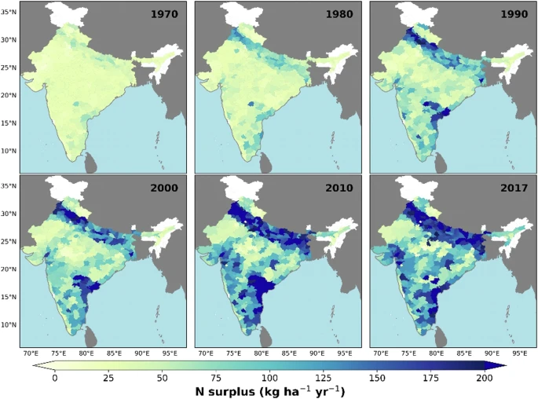

Project 1: Nitrogen Surplus in India
Analyzing district-level nutrient data to assess pollution and optimize crop strategies.
Analyzing district-level nutrient data to assess pollution and optimize crop strategies.

Forecasting thermal stress on streams in Germany using climate scenarios.